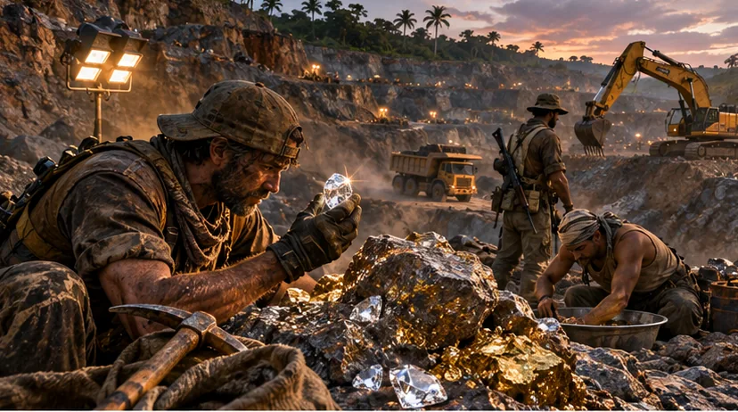
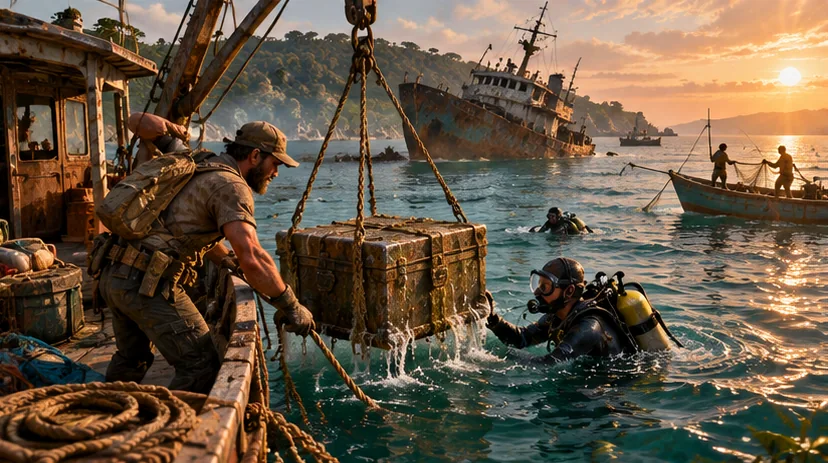
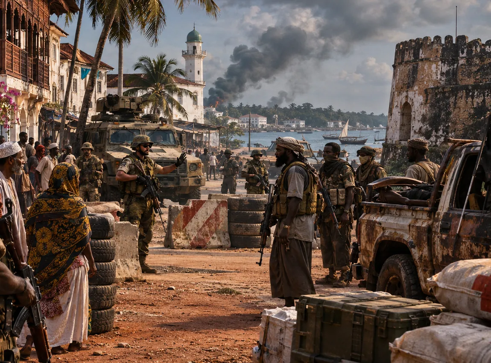

ОСТРОВ,
ГДЕ КАЖДОЕ
РЕШЕНИЕ ВАЖНО.
Занзибария. Альтернативная история в игровом мире ролевой игры на базе DayZ. Война за города, добыча золота и алмазов, морские экспедиции, опасные джунгли и экономика живого RP-мира на карте Lux.
Выживание здесь только начало.
В Занзибарии деньги, власть и репутация связаны. Рыбак может снабжать город едой, старатель может найти алмазы, а фракция может потерять прибыльный район, даже выиграв перестрелку. Выбирай профессию, заключай сделки, исследуй Lux и создавай сюжет вместе с другими игроками.
Все игровые возможности ↗ 01 / АЛМАЗЫ, ЗОЛОТО, КОНВОИ
01 / АЛМАЗЫ, ЗОЛОТО, КОНВОИЗарабатывай. Рискуй.
Влияй на остров.
Визуализации показывают художественную концепцию игровых сценариев, не фактические скриншоты.

Захват и удержание городов
Участвуй в борьбе за поселения, защищай дороги, снабжай гарнизоны и получай доход с подконтрольных территорий.
Исследовать механикуДобыча алмазов
Ищи месторождения, добывай сырьё, организуй охрану и договаривайся о продаже ценных камней.
Исследовать механику
Золотые прииски
Добывай золото, отправляй партии руды на обработку, создавай торговые маршруты и защищай экспедиции.
Исследовать механику
Рыбалка и промысел
Лови рыбу на берегу или с лодки, продавай улов, снабжай поселения и выстраивай рыбацкие артели.
Исследовать механику
Грузы затонувших кораблей
Исследуй побережье, ищи места крушений и поднимай ценный груз из воды.
Исследовать механику
Охота и браконьерство
Выслеживай опасных животных, добывай трофеи и участвуй в борьбе с незаконной торговлей.
Исследовать механикуПолитика, которая
стала войной.
Занзибария - остров на юго-востоке Африканского рога, исторически получивший огромное исламское и арабское влияние. На 99% он населен мусульманами-суннитами, при том что более 85% населения - автохтонное чернокожее (банту). Еще 13% -смешанное арабское население и 2% занимают приезжие белые.
Занзибария богата нефтью и редкими минералами. Долгие годы власть держалась на доходах от экспорта и портового транзита от судов, проходящих по пути суэцкого канала. Но прибыль от ресурсов снизилась в 2023 с кризисом блокады проливов, а остаток ее оседал у узкого круга чиновников и владельцев аффилированных с третьими странами добывающих компаний, тогда как рыбацкие посёлки, фермерские угодья и неблагополучные северные районы оставались без дорог, электричества и честного представительства в органах власти.

Республика Занзибария.
Территория Lux.
Действие ролевого проекта происходит на игровой карте LuxRedux для DayZ. Сиал, аэродром, порт Айко, добывающие объекты, джунгли и десятки поселений формируют реальную игровую географию. Политический сюжет и линии фронта относятся к вымышленному лору.
Изучить карту Lux ↗Сиал, Тенгах, Калклуа, Напхарат, Хонг и портовые районы. Переход к интерактивной карте без чужих пометок.
Открыть географический атлас ↗Как остров дошёл
до гражданской войны.
Мванга Амин приходит к власти с обещанием реформ, порядка и мирного сосуществования общин.
Кризис морских маршрутов сокращает доходы, а имущественное неравенство обостряет недовольство.
Забастовка нефтяников и события в Сиале приводят к чрезвычайному положению и восстанию на севере.
Фронты нестабильны. Пять сил борются за влияние, а гражданское население пытается пережить войну.
Пять сторон.
Ни одного простого ответа.



Пока люди воюют,
лес живёт.
Тигры, чёрные пантеры, носороги, крокодилы, гепарды, гиены и другие хищники. Охотничьи экспедиции, редкие трофеи, контрабанда и профессия егеря создают отдельную жизнь вне городов.
Исследовать охоту ↗Жизнь между
блокпостами.
История требует
правил.
Базовые нормы ролевого сервера: NLR, Non-RP, FearRP, Metagaming, Powergaming, KOS и взаимодействие фракций.